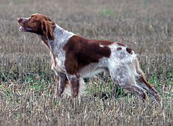

Les diverses sortes d' épagneuls
Le mot épagneul désigne un ensemble de races de chiens de chasse. Il comprend les races suivantes :
- Épagneul bleu de Picardie
- Épagneul breton
- Épagneul français
- Épagneul picard
- Épagneul de Pont-Audemer
- Épagneul de Saint-Usuge
- Épagneul allemand
- Épagneul de Münster (grand et petit)
- Épagneul hollandais (appelé aussi « Drentsche Patrijhond », c'est-à-dire Chien de perdix du Drenthe)
- Épagneul nain continental, comprenant notamment les variétés papillon et phalène.
Un chien de chasse
Un épagneul en arrêt devant des perdrix
Source : Wikipédia, Licence CC BY-SA
L' épagneul breton
Un épagneul breton est une race de chien du groupe des épagneuls réputée pour ses talents de chasseur grâce à ses capacités de chien d'arrêt, de leveur et de rapporteur.
Les épagneuls breton seraient nés dans le courant du XIXe siècle d'un croisement de setters anglais avec des chiens rustiques appelés « chiens de charbonniers », qui existaient dans la région de Callac en Bretagne, qui sera longtemps réputée pour ses élevages. La ville de Callac est d'ailleurs baptisée « capitale de l' épagneul breton ».
L' épagneul breton est un chien affectueux
Source : Wikipédia, Licence CC BY-SA
L' épagneul breton est obéissant, intelligent, il est très facile à éduquer et présente de fortes aptitudes au dressage. D'un caractère équilibré, il peut également faire un bon chien de compagnie car il n'a pas un tempérament agressif, même s'il est assez indépendant. Affectueux et sociable, il s'entend bien avec ses congénères, ainsi qu’avec les enfants. Vif et sportif, doté d'un flair excellent, c’est un chasseur né qui préfère la campagne à la ville, mais peut se contenter d'une vie en appartement si on le sort régulièrement.
Dans la littérature
Liberté ! c'est ainsi qu'en nos rébellionsAvec des épagneuls nous fîmes des lions
Et que, sous l'ouragan maudit que nous soufflâmes,
Toutes sortes de mots se couvrirent de flammes
Victor Hugo, Les contemplations